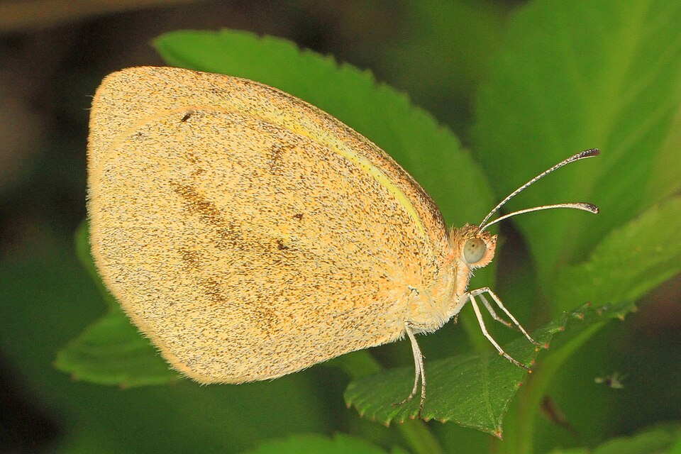
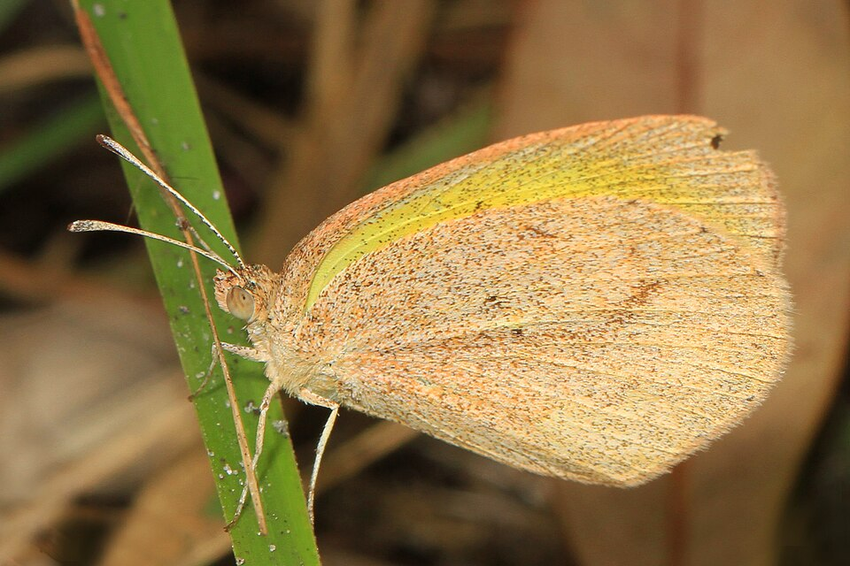
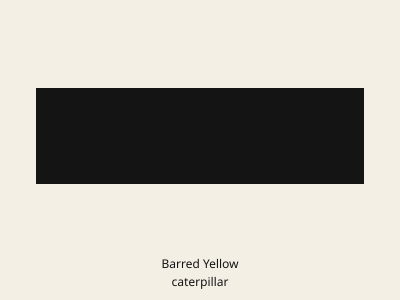

Eurema daira
Common nowSmall yellow, still being photographed in Lee County this month. Weedy lots and low plants, not a canopy butterfly.


Weedy lots, roadsides, fields, fallow ground.
Pencil flower
Stylosanthes biflorashyleaf
Aeschynomene americanasticky jointvetch
Aeschynomene viscidulaLittle Yellow is plain lemon.
Dainty Sulphur is much smaller.